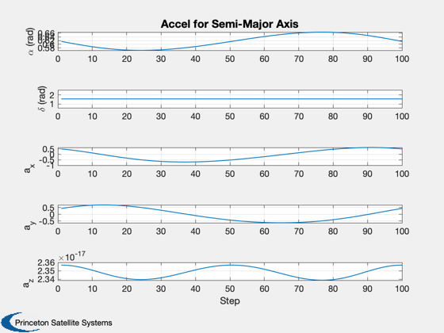
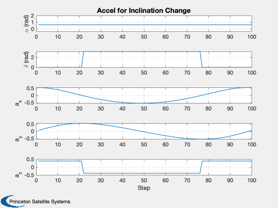

Demonstrate McInnes' guidance and coordinate functions.
Since version 9.
------------------------------------------------------------------------
See also Constant, Plot2D, RVFromKepler, AnglesMcInnesToU, delta,
LocallyOptimalTraj
------------------------------------------------------------------------
Contents
mu = Constant('mu sun');
au = Constant('au');
el = [au 0 0 0.1 0.1 0];
[r, v] = RVFromKepler( el, [], mu );
Semi-major axis change
[alpha, delta] = LocallyOptimalTraj( 'semi-major axis', r, v, mu );
Compute the acceleration vector
n = AnglesMcInnesToU( alpha, delta, r, v );
cA2 = cos(alpha).^2;
a = [cA2;cA2;cA2].*n;
Plot
Plot2D( 1:length(alpha), [alpha;delta;a],'Step',...
{'\alpha (rad)' '\delta (rad)' 'a_x' 'a_y' 'a_z'},...
'Accel for Semi-Major Axis');

Inclination change
[alpha, delta] = LocallyOptimalTraj( 'inclination', r, v, mu );
Compute the acceleration vector
n = AnglesMcInnesToU( alpha, delta, r, v );
cA2 = cos(alpha).^2;
a = [cA2;cA2;cA2].*n;
Plot
Plot2D( 1:length(alpha), [alpha;delta;a],'Step',...
{'\alpha (rad)' '\delta (rad)' 'a_x' 'a_y' 'a_z'},...
'Accel for Inclination Change');
